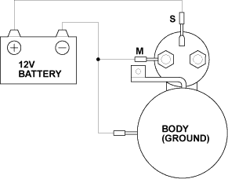
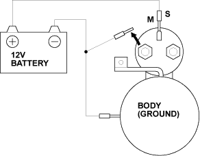
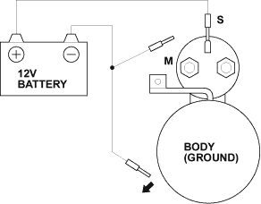
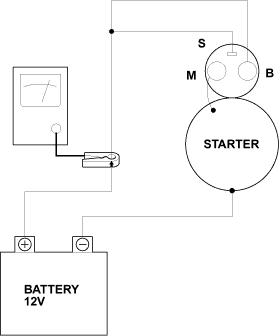

- Disconnect the wires from the S terminal and the M terminal.
- Make the connections as described below using as heavy a wire as possible (preferably equivalent to the wire used for the vehicle). To avoid damaging the starter, never leave the battery connected for more than 10 seconds.
- Connect the battery as shown. If the starter pinion moves out, it is working properly.

- Disconnect the battery from the M terminal. If the pinion does not retract, the hold-in coil is working properly.

- Disconnect the battery from the body. If the pinion retracts immediately, it is working properly.

- Clamp the starter firmly in a vice.
- Connect the starter to the battery as described in the diagram below, and confirm that the motor starts and keeps rotating.

- If the electric current and motor speed meet the specifications when the battery voltage is at 11.5 V, the starter is working properly.
Specifications:
Electric current:
90 A or less
Motor speed:
3,000 rpm (min-1) or more